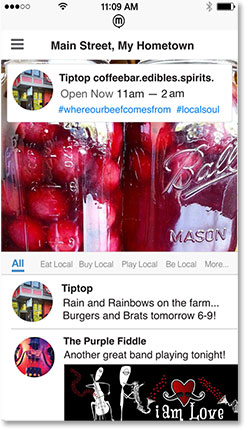
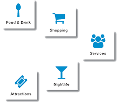
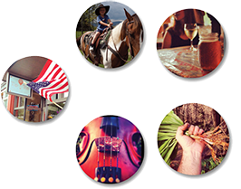
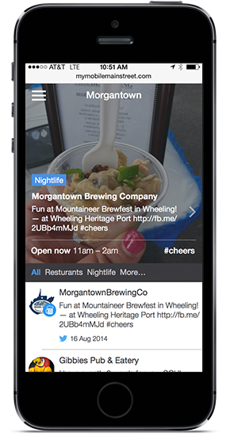

<div class="offcanvas">
    <div class="offcanvas-inner">
        <div class="offcanvas-collapse">
            <div class="offcanvas-collapse-inner">
                <div class="offcanvas-menu">
                    <h3 class="offcanvas-title">JSON API</h3>
                    <ul>
                        <li><a href='/MobileMainStreet/documentation/#how-it-works'>How It Works</a></li>
                        <li><a href='/MobileMainStreet/documentation/#install-guide'>Install Guide</a></li>
                        <li><a href='/MobileMainStreet/documentation/#quick-start'>Quick Start</a></li>
                        <li><a href='/MobileMainStreet/documentation/#api-documentation'>API Documentation</a></li>
                    </ul>
                </div>
            </div>
        </div>

        <header class="header h-valign" id="header">
            <div class="inner h-valigned vcontain">
                <div class="header-inner inner-l h-valign">
                    <a href="/#menu" class="header-menu menu-link h-valigned"></a>
                </div>

                <div class="header-inner inner-r h-valign">
                    <a href="https://github.com/InnoCenter-WVUReedCollegeofMedia/MobileMainStreet" class="download-link button h-valigned h-valign"><span class="h-valigned hide-mobile">Github</span><span class="h-valigned show-mobile"><i class="i-download"></i></span>
                    </a>
                </div>


                <p></p>
                <ul class="site-title"><li>social</li><li class="middle">local</li><li>story</li></ul>
                <p class="site-description">the publishing tool for sharing real-time moments and local insights</p>
                <p class="site-links">
                    <a href='#video' class="button button-l button-primary h-valign"><span class="h-valigned">DEMO</span></a>
                    <a href='/MobileMainStreet/documentation' class="button button-l h-valign btn-documentation"><span class="h-valigned">DOCUMENTATION</span></a>
                </p>
            </div>
            <div class="filmstrip">
                <div id="filmstrip-rotator">
                    <div id="img1" class="image"></div>
                    <div id="img2" class="image"></div>
                    <div id="img3" class="image"></div>
                    <div id="img4" class="image"></div>
                    <div id="img5" class="image"></div>
                </div>
            </div>

            <!--div class="filmstrip-2">
                <ul id="filmstrip-rotator-2">
                    <li id="img1" class="image2"></li>
                    <li id="img2" class="image2"></li>
                    <li id="img3" class="image2"></li>
                    <li id="img4" class="image2"></li>
                    <li id="img5" class="image2"></li>
                </ul>
            </div-->
            <!--div class="attributions">
              <p>Odyssey is a product of <a href="http://cartodb.com" class="footer-logo"><span>cartodb.com</span></a>, the most powerful mapping tool out there.</p>
            </div-->
        </header>

        <nav class="navbar h-valign">
            <div class="inner h-valigned">
                <div class="navbar-inner inner-l h-valign">
                    <a href="/#menu" class="navbar-menu menu-link h-valigned"></a>
                </div>

                <a href="/MobileMainStreet/" class="navbar-title"> <span class="txt">MOBILE MAIN STREET</span></a>

                <div class="navbar-inner inner-r h-valign">
                    <a href="https://github.com/InnoCenter-WVUReedCollegeofMedia/MobileMainStreet" class="download-link button h-valigned h-valign"><span class="h-valigned hide-mobile">Github</span><span class="h-valigned show-mobile"><i class="i-download"></i></span>
                    </a>
                </div>
            </div>
        </nav>

        <div class="content" id="video">
            <div class="inner">
                <section class="section" id="section">
                    <div id="video-container" align="center">  
                        <div id="video1" align="center">Loading the player ...</div>
                    </div>
                </section>
            </div>
        </div>

        <nav class="media-divider h-valign">
            <div class="inner h-valigned">
                <div class="inner h-valign">
                    <a href="/MobileMainStreet/" class="navbar-title">EVERY PLACE HAS A SOCIAL STORY<span>MOBILE MAIN STREET</span></a>
                </div>
            </div>
        </nav>


        <div class="content">
            <div class="inner-3col">
                <section class="section section-3col">
                    <div class="section group">
                        <div class="col span_1_of_3">
                            <h1>1.</h1>
                            <h2>Define Your Community</h2>
                            <p>Communities can be defined as a place, or as a topic, story, event, group, or any combination of location + shared interests</p>
                        </div>
                        <div class="col span_1_of_3">
                            <h1>2.</h1>
                            <h2>Invite Your Storytellers</h2>
                            <p>Storytellers can be limited to invited members, or you can syndicate a set of curated voices that best express your community.</p>
                        </div>
                        <div class="col span_1_of_3">
                            <h1>3.</h1>
                            <h2>Publish to Mobile</h2>
                            <p>MMS is a self-hosted web app /API service in mobile magazine format that enables a community organizer to publish branded mobile content</p>
                        </div>
                    </div>
                    <p class="tagline">EVERY PLACE HAS A SOCIAL STORY</p>
                    <p class="section-links">
                        <a href='/MobileMainStreet/#' class="button button-steps button-primary button-l h-valign"><span class="h-valigned">Create</span></a>
                        <a href='/MobileMainStreet/documentation' class="button button-steps button-l h-valign"><span class="h-valigned">Documentation</span></a>
                        <a href="#"></a>
                    </p>
                </section>

                <section class="section-diagram">
                    <!--p class="section-description">Diagram will go here showing screen shots, identifying categories, etc</p-->
                    <div class="tips">
                        

                        <ul>
                            <li class="tip tip-t">
                                <i></i>
                                <h3 class="tip-title">Define community as a<br>place, topic, story, event or group</h3>
                                <p class="tip-description"></p>
                                <p class="tip-img-alt"></p>
                            </li>

                            <li class="tip tip-r">
                                <i></i>
                                <h3 class="tip-title">Display featured or sponsored content, most recent, or most popular</h3>
                                <p class="tip-description"></p>
                            </li>

                            <li class="tip tip-r2">
                                <i></i>
                                <h3 class="tip-title">Define channels</h3>
                                <p class="tip-description"></p>
                                <p class="tip-img-alt"></p>
                            </li>

                            <li class="tip tip-l">
                                <i></i>
                                <h3 class="tip-title">Invite Storytellers</h3>
                                <p class="tip-description"></p>
                                <p class="tip-img-alt"></p>
                            </li>
                        </ul>
                    </div>
                </section>
                <!--section class="section-phones">
                    <div id="carousel">
                        <a></a>
                        <a></a>
                        <a></a>
                    </div>
                    <div id="carousel-alt">
                        
                        
                        
                    </div>
                </section-->

            </div>
        </div>

        <div class="footer">
            <div class="inner">
                <a href="/MobileMainStreet/" class="navbar-title"> MOBILE MAIN STREET</a>
                <p>is an open-source project developed by the West Virginia University Reed College of Media Innovation Center<br>
                    Funded by the Ford Foundation, the CTIA Wireless Foundation and the Verizon Foundation</p>
            </div>
        </div>
    </div>
</div>

